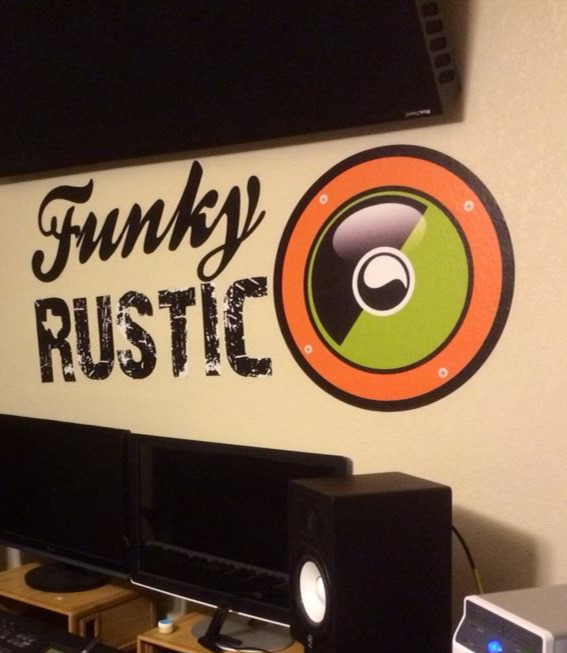
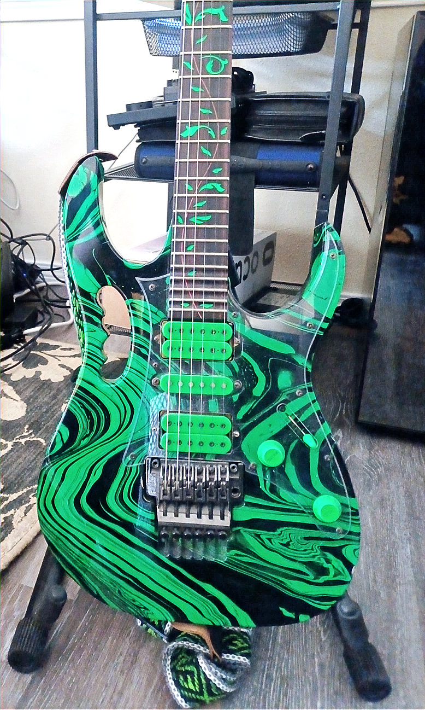
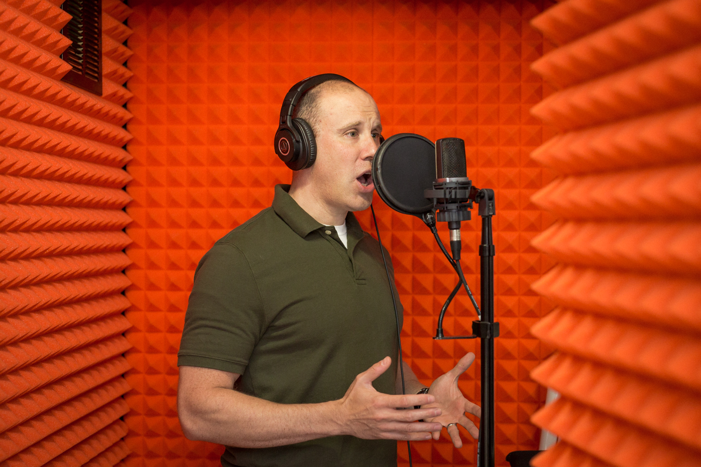

Collaborate
Bring Funky Rustic in where the audio needs to land.
Concepting, direction, music, sound, voice over, integration, and flexible production support.

Concepting
Start with the goals.
Define genre, emotion, interaction, and how music, sound, and voice should enhance the experience before production gets too far ahead.
- What the experience should feel like
- Which goals the audio should help reach
- How integration should be approached

Direction
Leadership for music, sound, and voice.
Bring in senior audio direction for internal teams, semi-embedded support, or fully external production leadership.
- Creative cohesion across disciplines
- Leadership for internal or external teams
- From concept through delivery

Music
Composition, sourcing, supervision, and mastering.
Discuss genre, usage, and content, then shape the score so it lands with emotional resonance, narrative connection, and mechanical cohesion.
- Original themes, songs, and score
- Licensing, sourcing, and library search
- Supervision, cueing, and mastering

Sound
Design, mixing, foley, and field recording.
Build sound that gives mechanics weight, environments character, and interactions the right sense of impact and place.
- Sound design for systems and worlds
- Mixing for a live interactive environment
- Custom foley and field recording

Voice Over
Casting, sessions, direction, and vocal design.
Find the right voices, guide the sessions, and shape performances that fit character, tone, budget, and long-term production needs.
- Voice over and casting
- Voice direction and performance guidance
- Effects and larger-than-life character treatment
Integration
Clean handoff into the actual build.
Audio is cleaned, optimized, and structured for real production use across Unreal, Unity, Wwise, and proprietary pipelines.
- On-time, on-spec delivery
- Technical integration support
- Nuendo, Reaper, and Wavelab workflow
Partners
Flexible scale for bigger or faster-moving projects.
Funky Rustic can expand through trusted partners when the project needs more coverage, specialized capacity, or regional flexibility.
- Li & Ortega
- Unlock Audio
- Ed Lima
Mentorships
Guidance for people building a career in game audio.
Get practical, industry-relevant perspective on creative work, technical growth, team dynamics, and avoiding common pitfalls.
- Creative and technical guidance
- Industry perspective and management insight
- Brand, presence, and career development